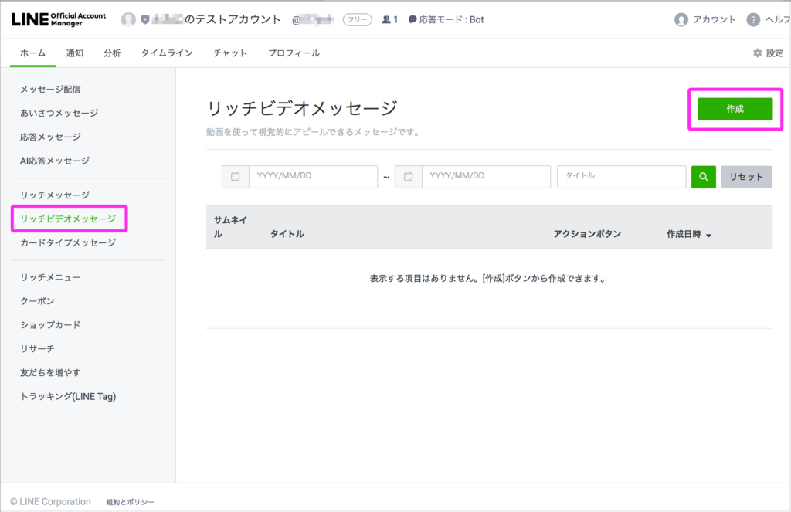
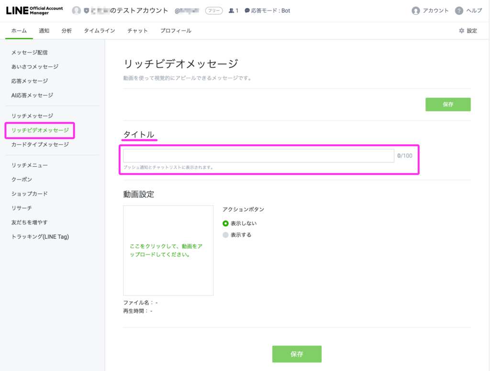
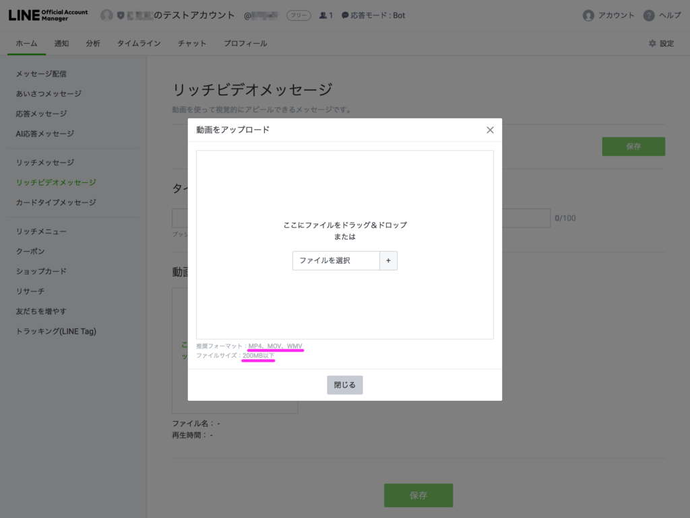
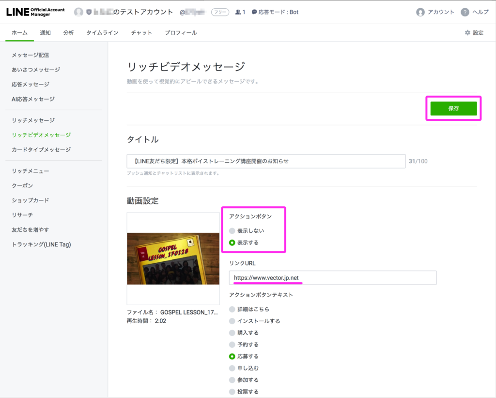
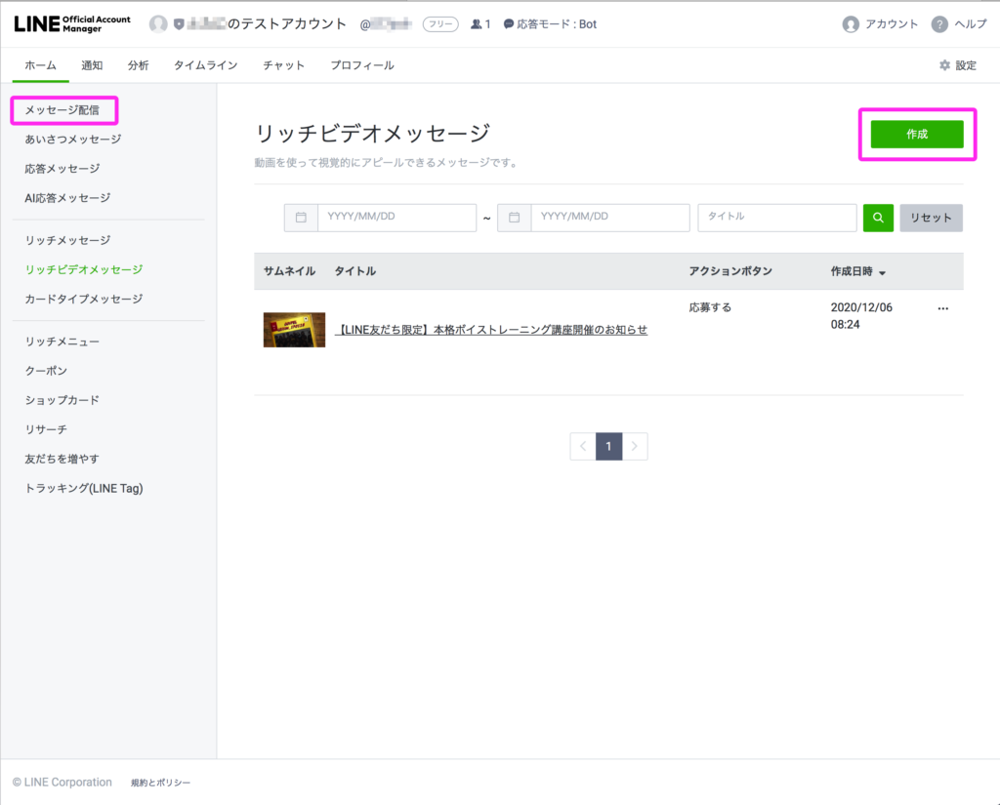

#016 リッチビデオメッセージの配信方法

こんにちは！matsumotoです。本日のテーマは「リッチビデオメッセージ」の作成と配信方法です。「リッチメニュー 」→「リッチメッセージ」、からの→「リッチビデオメッセージ」！関西人なら「どんだけリッチやねん！」とツッコミを入れたくなるところですが（笑）、いずれもとても効果的なツールなので、マストです！
リッチビデオメッセージは、自分で撮った動画を配信し、そこから友だち（お客様）に詳細を問い合わせてもらったり、申し込みや予約・応募・資料請求などしてもらうためのツールです。従来であれば、HPに情報掲載するとか、紙のチラシを配るようなやり方が普通でしたが、LINE公式アカウントなら無料でそれが出来る！という訳で、ぜひ活用してみてくださいね。
※もし分からないことがあったり、サポートが必要な方は、ぜひこのページ右下のバナーやプロフィール下の「友だち追加」ボタンからmatsumotoを友だち追加してください。初回60分無料相談（zoom）や、LINE公式アカウントを開設してからやることチェックリストのプレゼントなど、友達追加してもらうだけで色々特典がついてきますので、オススメです！ それでは、早速解説していきます。
（１）リッチビデオメッセージとは
名前からすぐ想像がつくでしょうが、いわゆる「動画配信」のことです。#015の「リッチメッセージ」の場合、見栄えの良い画像が必要だったり、色々面倒くさいな…、と思われる方もいるでしょうが、「リッチビデオメッセージ」はスマホで動画を撮って、そのまますぐ配信できるのでとってもお手軽です！
（２）どんなビデオ（動画）がいいの？
動画については、顔出しをして自分の友だち（お客様）に話しかけるようなタイプが望ましい（効果率も断然高い！）ですが、「顔出しはちょっと…」とか「スマホの自撮りで話すなんて恥ずかしくて無理」という方は、無理しなくても大丈夫。ただ、前回のリッチメッセージ同様、ここは動画で友だちに向かって自分のキャラやビジネスのことを直感的に伝えることができるのはもちろん、動画というだけで友だちの皆さんがちゃんと観てくれる率も高いです！
お堅いビジネスの方なら、見栄えのいいオフィスでパリッとスーツで決めて！また、おしゃれなお店やサロンを経営しておられる方なら、インスタ映えしそうな撮影小物やインテリアを整え、素敵な自分を演出してみてください。動画で話す内容は、あらかじめ準備しておき、理路整然と話せるようにしておきましょう。
（３）実際に配信するには


では、おなじみLINE Official Account Managerから自分のLINE公式アカウントにログインして、録ったビデオを配信していく方法を説明します。左メニューから「リッチビデオメッセージ」を選択し、右上の「作成」ボタンから作業を始めます。

まず「タイトル」をつけますが、このタイトル名については慎重に！この「タイトル」は友達のプッシュ通知にそのまま表示されますので、興味を持って開封してもらえるような100文字以内のタイトルをつけましょう。間違っても「テスト」などとつけないようご注意ください！
では、おなじみLine Official Account Managerから自分のLINE公式アカウントにログインして、録ったビデオを配信していく方法を説明します。左メニューから「リッチビデオメッセージ」を選択し、右上の「作成」ボタンから作業を始めます。
まず「タイトル」をつけますが、このタイトル名については慎重に！この「タイトル」は友達のプッシュ通知にそのまま表示されますので、興味を持って開封してもらえるような100文字以内のタイトルをつけましょう。間違っても「テスト」などとつけないようご注意ください！
（４）詳細な設定方法

次に、「ここをクリックして、動画をアップロードしてください。」というボタンをクリックして、あらかじめ録っておいた動画をアップロードします。この際、動画は200MBまでと決まっていますので、あまり長い動画はアップロードできません。TVのCMを参考に思い浮かべてもらえば分かりやすいと思いますが、だいたい16秒〜長くても1分以内におさめることをオススメします！
（５）アクションボタン

動画をアップロードできたら、右の「アクションボタン」をご確認ください。これは、友だちのトーク画面上で自分の動画の右上あたりに「詳しくはこちら」的なボタンを表示させるかどうかの設定です。これを表示させると、下に「リンクURL」という項目が表示されます。さらに、友だちにサービスを購入してもらったり、申し込みをしてもらうなど、自分の動画から何をしてもらいたいのかを選択し、そのためのサイトのURLを記載してください。
（６）メッセージ配信

以上の設定ができたら、このビデオメッセージを利用する期間を入力して下の「保存」ボタンから保存し、左の「メッセージ配信」を選択します。右上の「作成」ボタンを押してからは、#015で説明したのと同じ要領で設定していきます。下のほうの「テキストを入力」という文字が入っているボックスで「リッチビデオメッセージ」のボタンを選択するのを忘れずに！
（７）リッチビデオメッセージ配信上の注意
今はYouTubeなどで自由自在に編集した動画を配信している人も多いので、「ちゃんと動画編集しなければ…」と思う人も多いかもしれませんが、リッチビデオメッセージに関しては別に気にしなくてよいです！逆に、普段通りのあなたが自分の言葉で話している様子をスマホ上に配信できるのがLINE公式アカウントの良さでもあります。（ただ、具体的に伝えたいサービスメニュー等がある場合は、テロップなどを使用するのは効果的です）
配信スケジュールに関しては、観てもらう相手のことを考え、時間帯やタイミングに気をつけましょう。朝の出勤準備でバタバタしている時間帯や、平日みなさんがバリバリ仕事しているような時間帯に送っても、いちいちあなたのビデオメッセージを観てもらえる可能性は低いです。みなさんがゆっくり過ごしているであろう夜早めの時間帯や、休日が良いかもしれません。
リッチビデオメッセージを配信すると、のちほど「どの位の人が開封してくれたか」「何秒（何%）くらい観てくれたか」という結果分析もできます。動画を編集したり、タイトルに凝るなどの効果演出法もありますが、まずは気軽にスマホで自撮りし、メッセージ配信してみて、徐々にコツを覚えていきましょう。くれぐれも、会社の隅の薄暗い場所や、いい加減な身だしなみで撮らないようにだけご注意を！
それでは、今日はここまでです。また来週！
まずはLINE公式アカウントを開設しましょう！
●LINE公式アカウントの開設方法はこちら
●LINE公式アカウントをオススメする理由はこち
●LINE公式アカウントでできることはこちら
●Lステップでできることはこちら